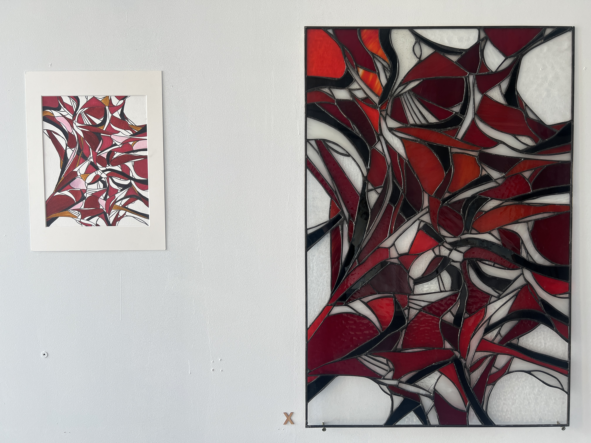
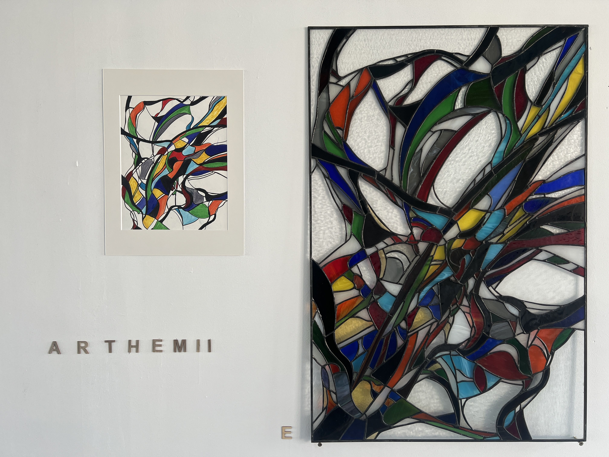
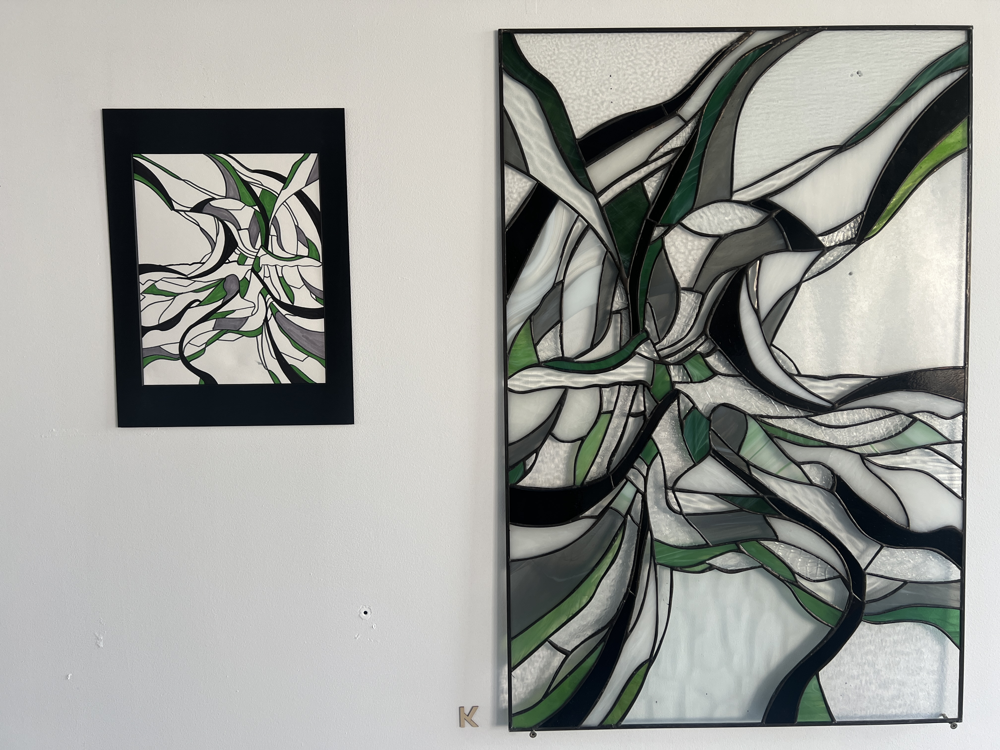
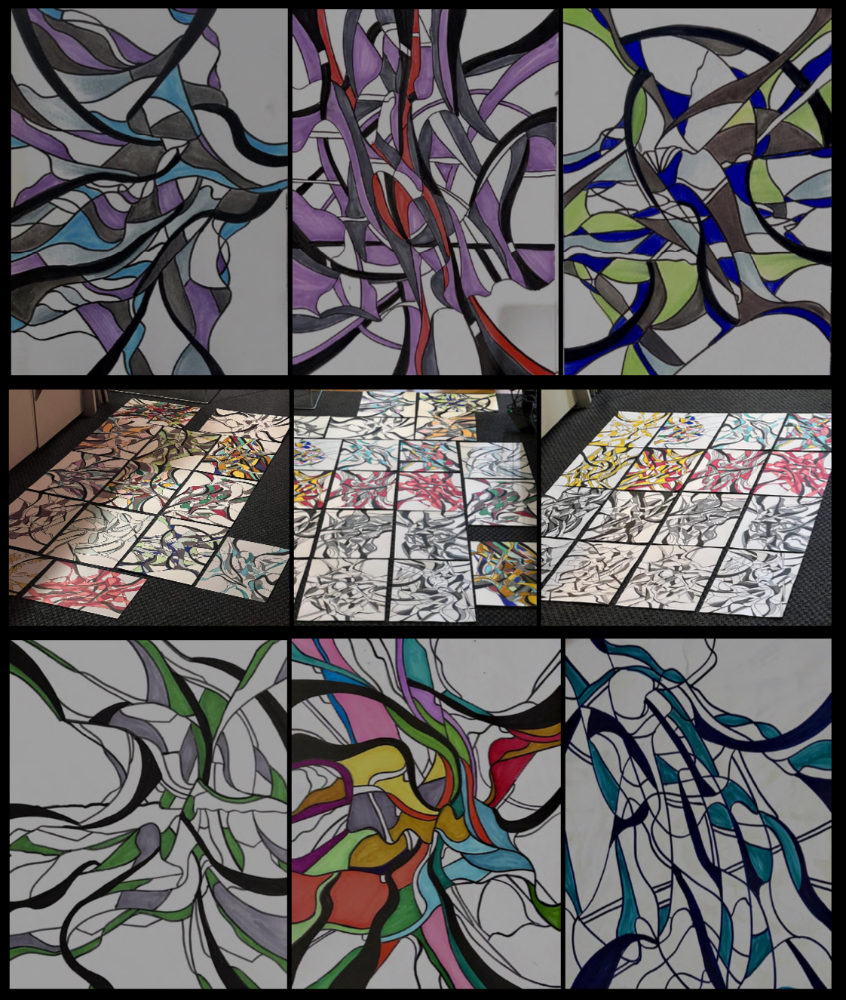
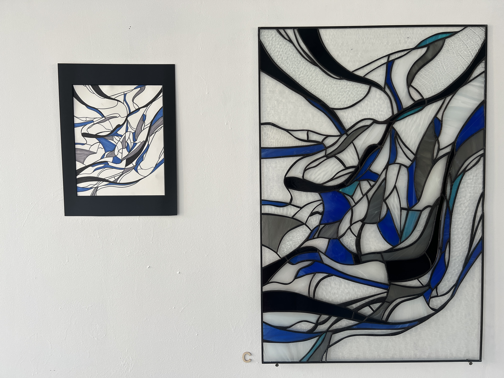
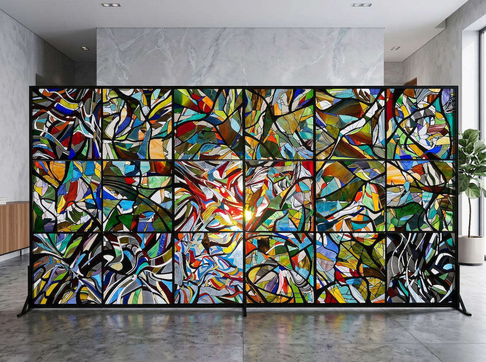

01
Tiffany Vitrage
The copper foil method perfected by Louis Comfort Tiffany. The process begins with detailed drawings divided into individual pieces. Colored glass sheets are chosen, traced, and cut precisely. Each piece is wrapped with adhesive copper foil, then assembled and soldered with tin-lead solder. Works (60×90 cm or 80×120 cm) are installed in custom light boxes with LED backlighting — warm colours create comfort and joy, cooler colors induce calm and contemplation.





